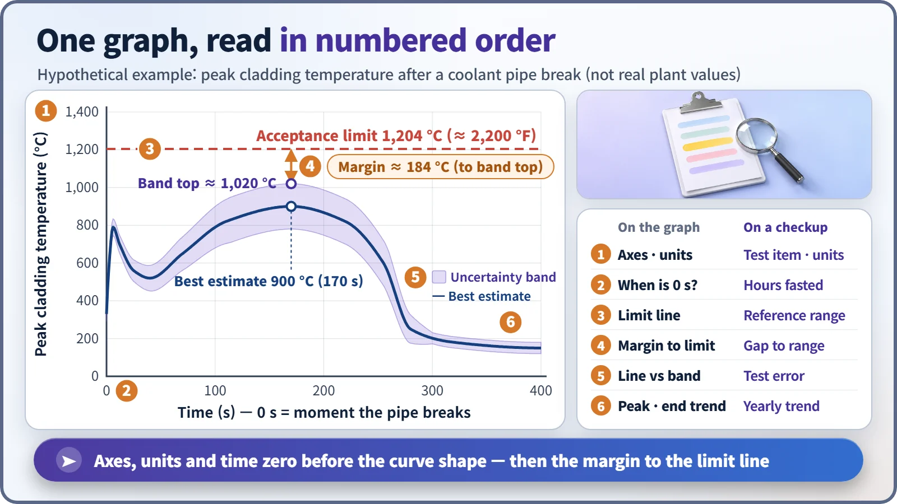
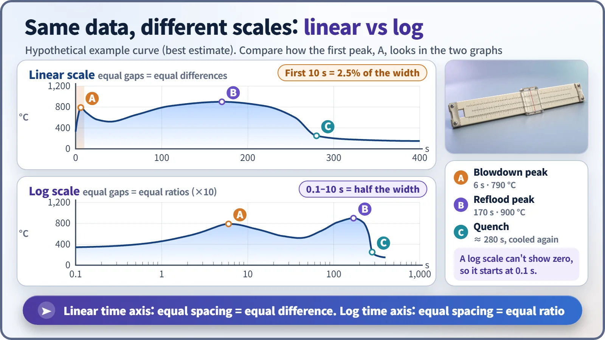

Modeling, Simulation & Computation · 274
Read It Top to Bottom, Like a Medical Checkup Report — How to Read a Calculation Result Graph
Units, scale and time zero come before the curve's shape; the margin to the limit line, and which line it was measured from, is what the graph actually says.
Read a calculation result graph in order: axis names and units, scale type, time zero and normalization first; then the margin to the limit line, line versus band, and peak and trend; and finally remember that a smooth curve is not proof of a correct one. The acceptance limit used in the example, 1,204 °C (2,200 °F) for peak cladding temperature, comes from U.S. regulations. [1]
Read it top to bottom, like a checkup report
A friend had a health checkup on a business trip abroad and smiled when he saw a fasting blood sugar of "6.1." Back home in South Korea, he'd been told that under 100 is normal. But the report used mmol/L, not mg/dL. Since 1 mmol/L is about 18 mg/dL, 6.1 is roughly 110 mg/dL, above the normal range. He read the number correctly, but by skipping the unit he reached exactly the wrong conclusion. [3]
Nuclear safety calculations also deliver their verdict through a graph, and a graph read out of order leads just as easily to the wrong conclusion. Let's walk through one hypothetical example step by step.
One example graph: fuel temperature after a pipe break
The example is a calculation for an accident in which a large reactor coolant pipe breaks. The vertical axis is the peak cladding temperature: the cladding is the thin metal tube around the nuclear fuel, and how hot it gets when coolant drains away is the central concern. The numbers on this curve are a hypothetical example, not values from a real plant.

| # | On the graph | On a checkup report |
|---|---|---|
| 1 | Axis names and units | Test item and unit |
| 2 | When is time zero? | Hours after fasting |
| 3 | Acceptance limit line | Reference range |
| 4 | Margin to the limit | Distance to the reference range |
| 5 | One line or a band | Test error range |
| 6 | Peak and end trend | Year-to-year trend |
Before the curve: axis names, units and "time zero"
Start with the axes. Is the vertical axis temperature or pressure, °C or °F? The same limit is written as 2,200 °F in U.S. regulations and 1,204 °C in Celsius. Miss the unit and the numbers tell a different story.
Next, when is time zero? In accident calculations it is usually the moment the pipe breaks, but some graphs put zero at the reactor shutdown signal, much as a blood test depends on how many hours after fasting it was taken.
Watch for normalized values. "102%" on a power graph means 1.02 times rated power, not 102 megawatts, and "1.05 p.u." sets the reference value to 1. A ratio only means something when you know its reference.
Odd tick spacing? It might be a log scale
If time-axis ticks jump by factors of ten (0.1, 1, 10, 100), it is a log scale. On an ordinary scale equal spacing means an equal difference; on a log scale it means an equal ratio, so the first few seconds and the next several hundred fit on one page.

On the ordinary scale, the first peak about 6 seconds after the break looks like a thin spike pressed against the left wall; on the log scale it opens up clearly. A log scale cannot draw zero, so a graph that starts at 0.1 seconds has not lost any data. Vertical log axes are common too, for quantities like the heat remaining after shutdown that shrink by factors of tens or hundreds; there, one step is a factor of ten.
The gap between the limit line and the curve is the real star
The checkup report's reference range corresponds to the graph's acceptance limit line, here the horizontal line at 1,204 °C. Regulatory standards in the United States and many other countries require peak cladding temperature in an accident to stay at or below this value. [1] [2]
What matters is not the curve's shape but the margin between line and curve, measured at the highest point, near 170 seconds in the example. Read the peak and the trend together: the verdict depends on the peak staying below the limit, but only a tail end that settles downward supports the conclusion that cooling is being maintained.
One line, or a band?
Safety analysis graphs now often show a band around the line, the result of uncertainty analysis, meaning "the real value is probably somewhere in here." Judgments usually use the top of the band. In the example, the margin is 304 °C measured from the best-estimate peak of 900 °C, but 184 °C measured from the band top of about 1,020 °C. One graph can yield two margins, so always check which line a number refers to.
A smooth curve doesn't guarantee the right answer
A calculation program draws a smooth curve even if the inputs are wrong or the model misses the physics. Smoothness only means the calculation ran to the end; it is not proof that it matches reality, just as a neatly printed checkup report doesn't prove the tests were accurate. That trust comes separately, from comparisons with experiments and uncertainty assessments.
Key takeaways
Axis names and units, scale type, time zero and normalization basis come first; then the margin to the limit line, line or band, and peak and trend; and last, smooth does not mean correct. Read a graph in that order and a nuclear safety calculation says what it actually means.